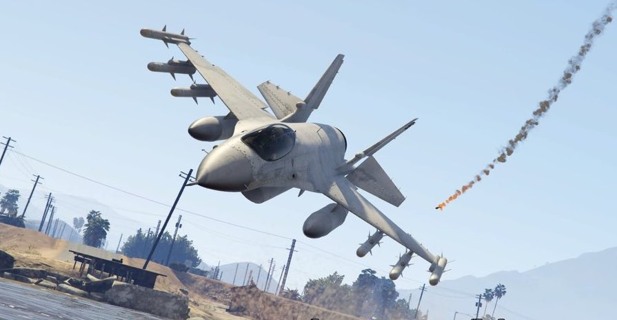
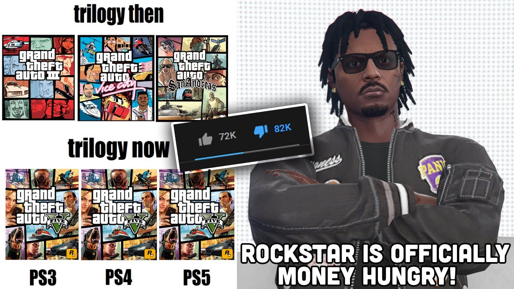

GTA V
Brief description
Grand Theft Auto V is an open-world action-adventure game developed by Rockstar North and published by Rockstar Games. It is the first and current main entry in the Grand Theft Auto series since 2008's Grand Theft Auto IV. This time around it is set san andreas, a fictional city based on south california. the single-player story follows three protagonists—retired bank robber Michael De Santa, street gangster Franklin Clinton, and drug dealer and arms smuggler Trevor Philips—and their efforts to commit heists while under pressure from a corrupt government agency and powerful crime figures. The open world design lets players freely roam San Andreas' open countryside and the fictional city of Los Santos.
story
Setting
Grand Theft Auto is set in the fictional city of Los Santos, which is a realistic parody of Los Angeles. the evnts in the game take place in 2013, four years on from Grand Theft Auto: Chinatown Wars, and five years on from Grand Theft Auto IV, The Lost and Damned and The Ballad of Gay Tony.
Plot
Los Santos: a sprawling sun-soaked metropolis full of self-help gurus, starlets and fading celebrities, once the envy of the Western world, now struggling to stay afloat in an era of economic uncertainty and cheap reality TV. Amidst the turmoil, three very different criminals plot their own chances of survival and success:
- Michael De Santa (left): formerly Michael Townley, a family man and a professional ex-con whose retirement is not all sunshine and roses and is looking to make it a bit more exciting
- Franklin Clinton (center): a street gangster, now looking to make a name for himself in the criminal underworld;
- Trevor Philips (right): a violent maniac involved in numerous types of criminal activity such as drug smuggling and gun Running who is driven by the chance of a cheap high and the next big score.
Gameplay
Grand Theft Auto V evolves nearly every mechanic that was in the previous Grand Theft Auto games. As far as driving goes, the vehicles have been greatly improved, with Rockstar running more complex physics on them, such as making some cars hold to the ground slightly better. The driving mechanics feel more like a racing game, particularly the Midnight Club series, compared to Grand Theft Auto IV's rocky, boat-like handling system. The shooting mechanics are better in terms of the feel of the mechanics and larger compared to the melee mechanics in the game, that being said, melee has been improved over the previous titles as well. Weapon selection has now also been changed. Instead of the old way of selecting through all the weapons sequentially, there is now a Weapon Wheel, which is similar to the one featured in Red Dead Redemption, another game made by Rockstar Games.
There are also many unique features in the game; one being that when the players are playing as one of three protagonists in the game, the other two are living their independent daily lives, and the player may be surprised by what they find the characters doing when they switch back into them. Another unique feature is that the character swapping feature is executed in a Google Earth-styled manner and was displayed during a Game Informer demo, which was shown to have run smoothly and without lag. The PC, PlayStation 4 and Xbox One versions present an exclusive feature, the first-person mode, where the whole game can be played through the eyes of the protagonist. This gameplay mode presents a whole new way to play the game. Cars have detailed interiors different from one another; shooting is like that of a dedicated FPS game
online mode
Grand Theft Auto V expands the multiplayer feature that was present in Grand Theft Auto IV. The multiplayer is treated as an additional title and is known as Grand Theft Auto Online. The open-world design lets players freely roam San Andreas, which includes an open countryside and the fictional city of Los Santos (based on Los Angeles). Players control a silent protagonist who arrives in Los Santos and aims to become the city's ultimate crime lord. Grand Theft Auto Online comprises cooperative missions where multiple players complete tasks to advance the narrative. The game also features numerous side missions and events, complex multi-stage missions called "Heists", and the ability to build a criminal empire by purchasing various businesses.
Completing virtually any activity in GTA Online rewards players with both money, used for in-game purchases, and Reputation Points (RP). As players gain RP and increase their rank, new items such as weapons, hair styles, clothes and vehicle mods will be unlocked for purchase, while new missions and jobs, such as Parachuting, will become available to play. Some missions may however not reward the player with any money if they are played solo, particularly sport activities in GTA Online. Many high rank missions offer far greater monetary and RP rewards than low rank missions. At higher ranks additional gameplay abilities will also become available through contacts on the player's mobile phone, such as asking Lester Crest to remove a Wanted Level, set a bounty on other players or calling Merryweather to conduct an airstrike. other abilities are also unlocked by purchasing properties such as military bunkers, doomsday facilities, ceo offices etc. abilities that you earn include the use of an orbital canon, the ability to research new weaponry so you can commit warcrimes more efficiently, and renting helicpopters etc.

Even though it seems as if GTA online is encouraging players to commit atrocious crimes by adding all these weapons of destruction If a player is seen to be creating an excessive negative effect on the Online world, they will accumulate Bad Sport points. When enough of these points are either accumulated through a short period of time (or gathered up for longer periods) the offending player will be moved into a separate match-making pool and put into "Bad sport" lobbies which will prevent the player from playing with non bad-sport players, people in their friend list included. The player will also be forced to wear a dunce hat (which will be taken off inside vehicles or replaced by motorcycle helmets on bikes). These bad sport points are gathered and bound to a character by destroying personal vehicles belonging to other players, quitting jobs/mission early, submitting false reports and being reported.
Development
Rockstar North began to develop Grand Theft Auto V in 2008, following Grand Theft Auto IV's release. Development was conducted by a team of more than 1,000 people, including Rockstar North's core team and staff from parent company Rockstar Games' studios around the world. The proprietary Rockstar Advanced Game Engine (RAGE) was overhauled for the game to improve its draw distance rendering capabilities. The Euphoria and Bullet software handle additional animation and rendering tasks. Having become familiar with the PlayStation 3 and Xbox 360 hardware over time, Rockstar found they were able to push the consoles' graphical capabilities further than in previous games. Analyst estimations place the game's combined development and marketing budget at more than $265 million, which would make it the most expensive game ever made at that time.
The open world was modelled on Southern California and Los Angeles, and its design and in-game render constituted much of the game's early work. Key members of the game world production team took field research trips throughout the region and documented their research with photo and video footage. Google Maps projections of Los Angeles were used by the team to help design Los Santos' road networks. To reflect and reproduce Los Angeles' demographic spread, the developers studied census data and watched documentaries about the city. The team considered creating the open world the most technically demanding aspect of the game's production. similarities between los santos and los angeles can be seen below


A fundamental design goal from the outset was to innovate on the series core structure by giving players control of three lead protagonists instead of one. The idea was first raised during Grand Theft Auto: San Andreas' development, but contemporaneous hardware restrictions made it infeasible. Having developed two Grand Theft Auto IV episodic expansion packs featuring new protagonists in 2009, the team wanted to base Grand Theft Auto V around three simultaneously controlled protagonists. The team viewed it as a spiritual successor to many of their previous games (such as Grand Theft Auto IV, Red Dead Redemption and Max Payne 3), and designed it to improve upon their gameplay mechanics. They sought to improve the action gameplay by refining the shooting mechanics and cover system and reworked the driving mechanics to correct Grand Theft Auto IV's awkward vehicle controls.
After an audition process, Ned Luke, Shawn Fonteno and Steven Ogg were selected to portray Michael, Franklin and Trevor, respectively. Their performances were mostly recorded using motion capture technology, but dialogue for scenes with characters seated in vehicles was recorded in studios instead. The game is the first in its series to feature an original score, composed by a team of producers collaborating over several years. Licensed music provided by an in-game radio is also used. The team licensed more than 241 tracks shared between fifteen radio stations, with an additional two stations providing talk radio. Some of the tracks were written specifically for the game, such as rapper and producer Flying Lotus' original work composed for the FlyLo FM radio station he hosts.
Impact
Reception
Grand Theft Auto V received universal acclaim from critics, according to review aggregator Metacritic, based on 50 reviews for the PlayStation 3 version and 58 reviews for the Xbox 360 version. The game is Metacritic 's fifth-highest rated, tied with several others. Reviewers liked the multiple lead character formula, heist mission design and presentation and more. IGN's Keza MacDonald called Grand Theft Auto V "one of the very best video games ever made", and Play considered it "generation-defining" and "exceptional". Edge wrote that it is a "remarkable achievement" in open-world design and storytelling, while The the daily Telegrap's Tom Hoggins declared it a "colossal feat of technical engineering". It became the second-ever western developed game to be awarded a perfect score from the Japanese video game magazine Famitsu. despite all the praise Rockstar have received for the game they've also received backlash, especially for GTA online and for many reasons. fans have described the game as "broken" refering to the fact that the balance of wapons in the game needs to be re-worked. despite all their cries to Rockstar only minor insignificant changes have occured another thing that GTA online players have complained about is the existence of pay walls that lead to micro transactions i.e players need to buy a night club in order to buy a Terrorbyte in order to be able to buy and store an opressor mk2. the existence of these paywalls have displeased players greatly but since these pay-walls increase Rockstar's revenues they do not revert them but instead have continued to add more and more of them in order to "milk" as much revenue from their player base.

this has led to players speculating that the reason GTA V has been ongoing for such a long time is because it is still a very profitable revenue stream for rockstar games. infact GTA V has recently had it's most profitable month in april of 2020.
Importance
Grand Theft Auto V is anything it’s a game of immense, obsessive detail. There is no open world that feels as authentic and lived-in as Grand Theft Auto V’s Los Santos and its surrounding countryside. This game lets you experience a realistic lifestyle that is absolutely impossible in real life for the average person. this is shown by how big the Role play (RP) community in GTA V. as the name suggests. it is a community that take the open in open world to the next level, they create servers and act out whatever comes through their minds. as though it was real life. Critics agreed that Grand Theft Auto V was among seventh generation console gaming's best and a great closing title before the eighth generation's emergence. Polygon's 's Plante observed that the game would "bridge between games' present and the future", and declared it "the closure of this generation, and the benchmark for the next".